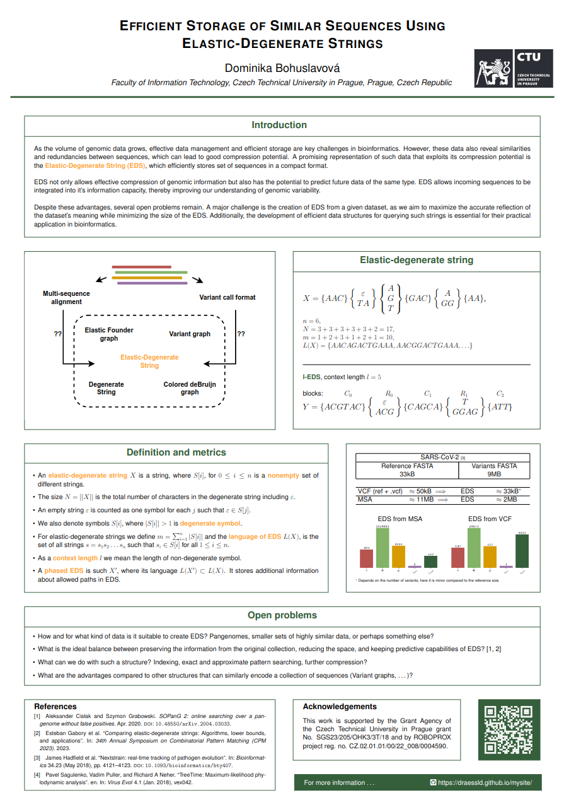

Uncompleted
For taxonomic classification, we are asked to index the genomes in a phylogenetic tree such that later, given a DNA read, we can quickly choose a small subtree likely to contain the genome from which that read was drawn. Although popular classifiers such as Kraken use k-mers, recent research indicates that using maximal exact matches (MEMs) can lead to better classifications. For example, we can
A genomic data can be stored in many different ways and formats, from simple sequence collection storing data directly in their raw form to variant calling formats (VCFs), which store more sophisticated information about individual variants. Most of these formats still compare new sequences to the reference sequence, limiting the analysis to a comparison to some consensus that has been established with limited information. This is not the only reason why EDS has found its place in pangenomics.
EDS is able to retain information from all the sequences in the collection with a reasonable reduction in memory consumption and thus remains representative of the species’ pangenome. Whether or not we keep information from the original collection (phasing of the sequences), we can predict variants haven’t yet been added to the collection.
The process of creating such an EDS is crucial, as there are many ways and parameters that strongly influence the information capacity, size and compression ratio of the structure.
In this project we focus on the operation, which can be done via highly developed grammar indices. But! This project is still quite new... do not hang up :)
2021, 2023, 2024